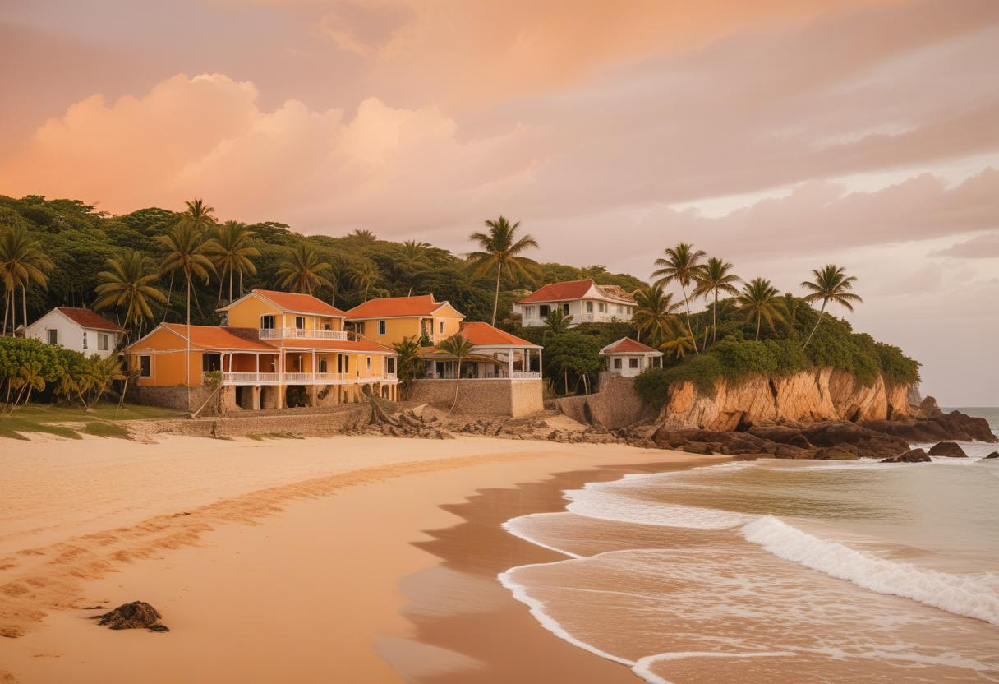
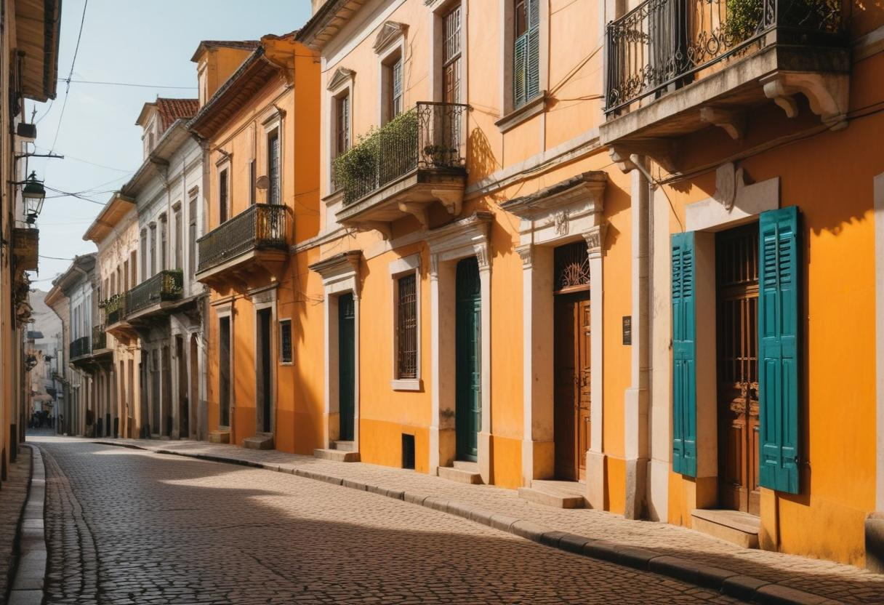

Destaques do Maranhão

Lençóis Maranhenses
Um deserto de dunas brancas com lagoas de água doce cristalina que se formam na temporada de chuvas.

Alcântara
Cidade histórica com ruínas coloniais e igrejas dos séculos
XVII e XVIII.

Centro Histórico de São Luís
Patrimônio Mundial da UNESCO, com arquitetura colonial portuguesa, casarões coloridos e azulejos tradicionais.
Sobre o Maranhão
Aqui você encontrará informações detalhadas sobre o estado do Maranhão, sua história, cultura, gastronomia e muito mais.
Saiba mais